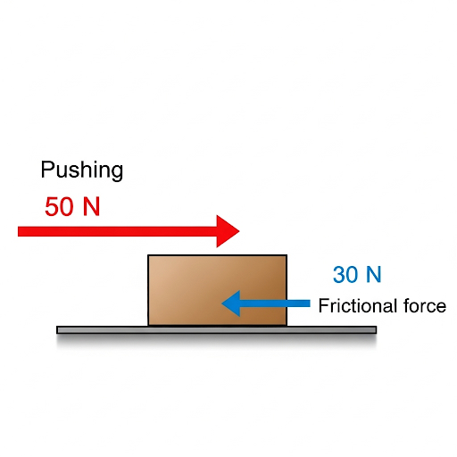

4.3 Net Force
In physics, forces rarely act alone. Objects often experience multiple forces at the same time. The net force is the vector sum of all individual forces acting on an object.
Key Idea:
The net force determines the object's change in motion (acceleration) according to Newton's second law.
Balanced vs. Unbalanced Forces
- Balanced Forces: When forces acting on an object are equal in magnitude but opposite in direction, they cancel out. Result: The net force is zero, and the object does not accelerate. Example: A book resting on a table experiences an upward normal force and a downward gravitational force of equal magnitude.
- Unbalanced Forces: When forces are unequal, they do not cancel out. Result: The net force is non-zero, causing the object to accelerate in the direction of the net force. Example: Pushing a box with more force than friction provides causes it to move.
Illustration: Net Force on a Box
In the diagram below, a box is pushed to the right with a force of 50 N, while friction pushes to the left with 30 N.
Calculation: Net force = \(50 \, \mathrm{N} - 30 \, \mathrm{N} = 20 \, \mathrm{N}\) to the right.
How to Calculate Net Force
- Identify all forces acting on the object (magnitude and direction).
- Choose a consistent sign convention (e.g., right is positive, left is negative).
- Represent forces as positive or negative based on direction.
- Add all forces algebraically to find the net force.
Formula:
\[
F_\text{net} = \sum F = F_1 + F_2 + F_3 + \ldots
\]
Example Problems
- Example 1: A rope pulls a sled to the right with 80 N while friction resists with 20 N to the left. Solution: Net force = \(80 - 20 = 60 \, \mathrm{N}\) to the right.
- Example 2: Two people push a box in opposite directions: one with 40 N right, the other with 30 N left. Solution: Net force = \(40 - 30 = 10 \, \mathrm{N}\) to the right.
- Example 3: A box is pushed right with 50 N and also pulled right with 30 N, while friction opposes with 40 N. Solution: Net force = \(50 + 30 - 40 = 40 \, \mathrm{N}\) to the right.
Practice Problems
Solve the following problems, showing your steps and including direction in your answer.
- A cart is pushed forward with 35 N while friction pushes backward with 15 N. Find the net force.
- Two people push a piano: one with 200 N east, the other with 150 N west. What is the net force?
- A boat engine provides 500 N forward while water resistance is 480 N backward. Determine the net force.
- Three forces act on a box: 20 N right, 10 N left, and 5 N right. Find the net force.
- If the net force on an object is 0, what does this tell you about its motion?